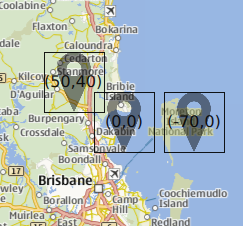

MapQuickItem QML Type
The MapQuickItem type displays an arbitrary Qt Quick object on a Map. More...
| Import Statement: | import QtLocation 6.6 |
| Since: | QtLocation 5.5 |
- List of all members, including inherited members
- MapQuickItem is part of QML Maps Plugin.
Properties
- anchorPoint : QPointF
- autoFadeIn : bool
- coordinate : coordinate
- sourceItem : object
- zoomLevel : real
Detailed Description
The MapQuickItem type is used to place an arbitrary Qt Quick object on a Map at a specified location and size. Compared to floating an item above the Map, a MapQuickItem will follow the panning (and optionally, the zooming) of the Map as if it is on the Map surface.
The sourceItem property contains the Qt Quick item to be drawn, which can be any kind of visible type.
Positioning and Sizing
The positioning of the MapQuickItem on the Map is controlled by two properties: coordinate and anchorPoint. If only coordinate is set, it specifies a longitude/latitude coordinate for the item to be placed at. The set coordinate will line up with the top-left corner of the contained item when shown on the screen.
The anchorPoint property provides a way to line up the coordinate with other parts of the item than just the top-left corner, by setting a number of pixels the item will be offset by. A simple way to think about it is to note that the point given by anchorPoint on the item itself is the point that will line up with the given coordinate when displayed.
In addition to being anchored to the map, the MapQuickItem can optionally follow the scale of the map, and change size when the Map is zoomed in or zoomed out. This behaviour is controlled by the zoomLevel property. The default behaviour if zoomLevel is not set is for the item to be drawn "on the screen" rather than "on the map", so that its size remains the same regardless of the zoom level of the Map.
Performance
Performance of a MapQuickItem is normally in the same ballpark as the contained Qt Quick item alone. Overheads added amount to a translation and (possibly) scaling of the original item, as well as a transformation from longitude and latitude to screen position.
Limitations
Note: Due to an implementation detail, items placed inside a MapQuickItem will have a parent item which is not the MapQuickItem. Refer to the MapQuickItem by its id, and avoid the use of anchor in the sourceItem.
Example Usage
The following snippet shows a MapQuickItem containing an Image object, to display a Marker on the Map. This strategy is used to show the map markers in the MapViewer example.
MapQuickItem { id: marker anchorPoint.x: image.width/4 anchorPoint.y: image.height HoverHandler { id: hoverHandler } TapHandler { id: tapHandler acceptedButtons: Qt.RightButton gesturePolicy: TapHandler.WithinBounds onTapped: { mapview.currentMarker = -1 for (var i = 0; i< mapview.markers.length; i++){ if (marker == mapview.markers[i]){ mapview.currentMarker = i break } } mapview.showMarkerMenu(marker.coordinate) } } DragHandler { id: dragHandler grabPermissions: PointerHandler.CanTakeOverFromItems | PointerHandler.CanTakeOverFromHandlersOfDifferentType } sourceItem: Image { id: image } }

Property Documentation
anchorPoint : QPointF |
This property determines which point on the sourceItem that will be lined up with the coordinate on the map.
autoFadeIn : bool |
This property holds whether the item automatically fades in when zooming into the map starting from very low zoom levels. By default this is true. Setting this property to false causes the map item to always have the opacity specified with the QtQuick::Item::opacity property, which is 1.0 by default.
coordinate : coordinate |
This property holds the anchor coordinate of the MapQuickItem. The point on the sourceItem that is specified by anchorPoint is kept aligned with this coordinate when drawn on the map.
In the image below, there are 3 MapQuickItems that are identical except for the value of their anchorPoint properties. The values of anchorPoint for each are written on top of the item.

sourceItem : object |
This property holds the source item that will be drawn on the map.
zoomLevel : real |
This property controls the scaling behaviour of the contents of the MapQuickItem. In particular, by setting this property it is possible to choose between objects that are drawn on the screen (and sized in screen pixels), and those drawn on the map surface (which change size with the zoom level of the map).
The default value for this property is 0.0, which corresponds to drawing the object on the screen surface. If set to another value, the object will be drawn on the map surface instead. The value (if not zero) specifies the zoomLevel at which the object will be visible at a scale of 1:1 (ie, where object pixels and screen pixels are the same). At zoom levels lower than this, the object will appear smaller, and at higher zoom levels, appear larger. This is in contrast to when this property is set to zero, where the object remains the same size on the screen at all zoom levels.